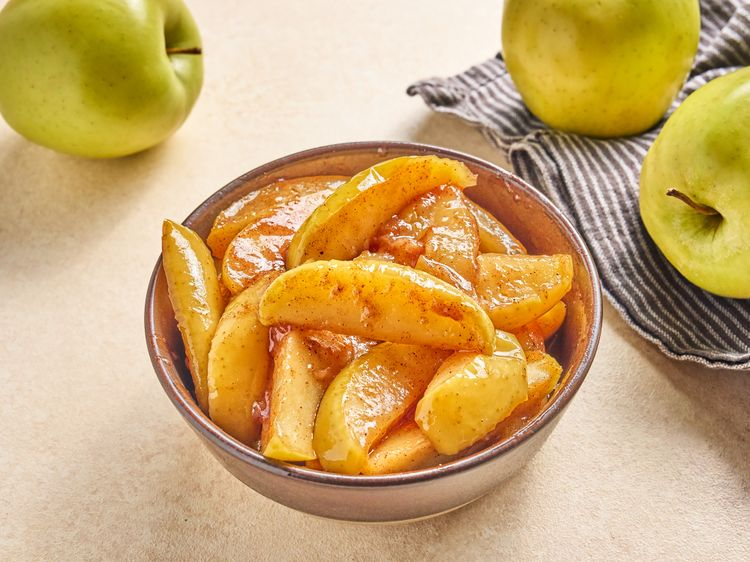

Home
Copycat Cracker Fried Apples

Credit: Peyton Beckwith
Description
These copycat Cracker Barrel fried apples feature Golden Delicious
apples, simmered in a buttery, sweet sauce until tender, and then
thickened with a cornstarch slurry.
Ingredients
- 6 tablespoons butter
- 4 Golden delicious apples, sliced, or more as needed
- 2 teaspoons ground cinnamon
- 1/2 cup white sugar
- 1/2 cup cold water
- 1 1/2 tablespoons cornstarch
steps
- Melt butter in a deep skillet over medium-high heat.
-
Add apples, cinnamon and sugar and stir until well coated in sugar mixture,.
Bring mixture to a simmer. Reduce heat to medium-low and cook, covered until
apples are very tender, about 20 minutes.
-
Whisk together cold water and cornstarch until dissolved. Stir cornstarch
mixture into apple mixture and return to a simmer. Cook until thickened,
about 2 minutes; remove from heat.